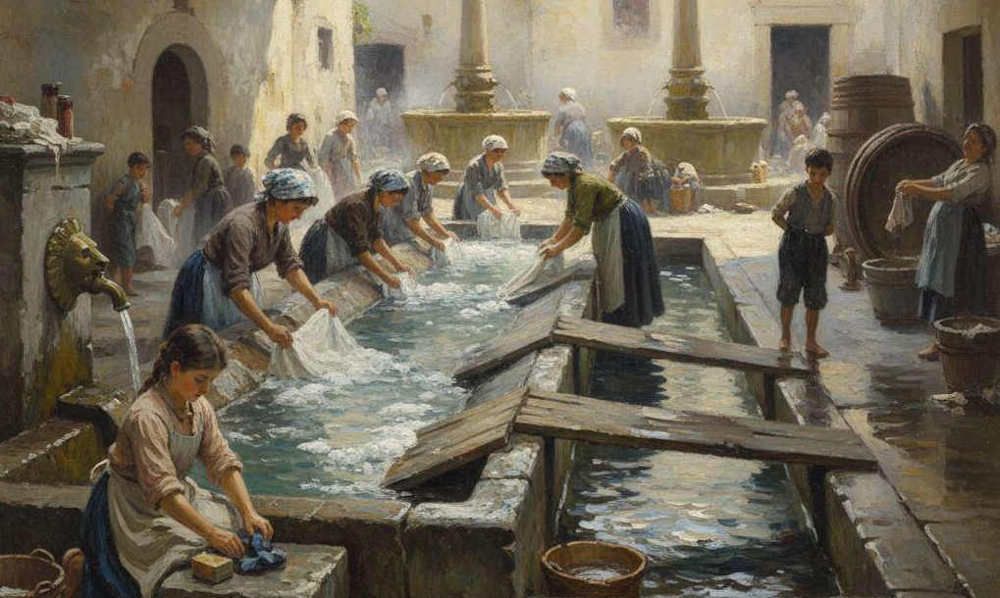

Mia madre era solita dire: La più grande invenzione per noi donne è stata la lavatrice. Chi ci ha liberato da tante fatiche, non so’ stati ‘l frigorifero o la televisione, ma la lavatrice!
Nell’immediato dopoguerra la maggior parte delle case nei vicoli di Viterbo era ancora priva delle condutture idriche: le donne attingevano l’acqua con le brocche da fontanelle di ghisa, presenti un po’ ovunque, e per lavare andavano al lavatoio. La città, sin dal Medioevo, era ben attrezzata allo scopo: fontane e fontanili alimentavano lavatoi più o meno grandi. Dalle cannelle delle monumentali fontane a fuso, sgorgava abbondante e ininterrotta l’acqua potabile, che andava a riempire una grande vasca sottostante, dove si abbeveravano gli animali; l’acqua, poi, attraverso una grata bucherellata s’incanalava per riemergere nel lavatoio situato in una via sottostante.
Nei freddi pomeriggi invernali mia madre tornava presto dalla campagna e quando la vedevo fare la “coroja” con il fazzoletto da spesa di cotone quadrettato, arrotolato a formare una stretta ciambella, sapevo che andava al lavatoio.
“Sta’ bona col babbo! Poi venite a prende li panni bagnati” diceva e, messa la coroja in
testa, vi posava sopra il “bagnapiede”, una grande bacinella zincata, contenente i panni
da lavare, il sapone e la bottiglia in vetro della varechina.
“Sì mamma!” Rispondevo felice: insieme a mio padre il tempo sarebbe passato veloce.
Avremmo gareggiato a disegnare con la matita sul marmo del tavolo di cucina gatti, asini, uccellini e piante da frutto, poi saremmo andati da lei. Talvolta arrivavamo prima che avesse finito: il lavatoio era pressoché deserto e la fioca luce della lampada, che pendeva dalle travature possenti del tetto, rischiarava un lungo canale in peperino dove scorreva un’acqua fumante. La prima volta che la vidi, mi arrampicai svelta svelta sulle pietre oblique dove si strofinavano i panni e non fece in tempo a dirmi: “Non toccà l’acqua, sei piccola, te vengono li reumatismi!” che le mie manine, già bagnate, si ritraevano rabbrividendo: era gelida!
Dai sei anni in poi cominciai anch’io a lavare.
In estate, i giorni in cui mia madre non si recava ai campi: “Veni! Annamo al lavatoro, che hai da imparà! Li figli, se giocano sempre, diventano fannulloni!”
Subito la seguivo, saltellando allegramente al suo fianco; da lontano già sentivo un vociare di donne: “Ce so’ le lavannare!” diceva mia madre.
“E noi non semo lavannare?”
“Noo! Noi lavamo solo li panni nostri, le lavannare quelli dell’artri”.
Arrivate al grande lavatoio in Piazza della Vite, trovavamo i posti sia a destra che a sinistra della bocchetta dell’acqua, già occupati da alcune robuste donne.
Gli alti muri laterali impedivano al sole di entrare e accentuavano l’afa. Tutto intorno, a circa mezzo metro di altezza, correva un ripiano di peperino: mia madre vi poggiava sopra il bagnapiede, poi andava giù in fondo, dove l’acqua defluiva attraverso una grossa feritoia. Lì c’erano le pietre per noi bambini; ne sollevava una da terra e la portava per me vicino alla sua postazione. In piedi là sopra avrei avuto la possibilità, sporgendomi sulle lastre, di arrivare all’acqua.
“Aspetta che te metto la para, se no te bagni!”
E dai panni portati prendeva una camicia del babbo con le maniche lunghe, che poi mi legava dietro a mo’ di grembiule da cucina.
“Prima ‘nsapona asciutto li panni colorati!”
Era un’operazione noiosa per me, impaziente di sguazzare con le mani nell’acqua corrente. Nel frattempo lei lavava la biancheria da mettere in varechina.
“Va’ un po’ a sfa’ giù le calze del babbo, che oggi c’è gente!”
Sì perché, se dopo di noi erano sopraggiunte altre persone, bisognava andare in fondo, “a sfare”, cioè a togliere il grosso dello sporco dai panni particolarmente sudici, come le calze interrate dei contadini o i pannetti mensili delle femmine.
Spesso mi trovavo di fronte ad Armanda, una compagna di vicolo, che dall’altro lato prelavava i panni pieni di calce del padre e del fratello.
Mentre strofinavo gli spessi calzini di cotone, abilmente realizzati con quattro ferri dalla nonna, guardavo le strisce rossicce di acqua terrosa rigare la pietra e le paragonavo a quelle biancastre che uscivano dalle piccole dita della mia dirimpettaia; da lontano ammiravo le mani, forti e callose, delle lavandaie che strofinavano, senza dover lasciare il posto, le sottili calze dei signori, dalle quali proveniva una morbida e candida schiuma, e mi chiedevo: “Chissà perché le lavano?”
Mi affascinava la schiuma delle lavandaie e quando galleggiando arrivava davanti a me, svelta svelta inzuppavo i miei panni per raccoglierla il più possibile e strofinare con gusto.
Il nostro sapone, fatto in casa non produceva schiuma.
Tolto il grosso dello sporco, tornavo vicino a mia madre. Intanto le donne avevano messo alcuni panni di traverso nel canale a formare delle pozze dove immergere più comodamente la biancheria: l’acqua in eccesso poi sarebbe tracimata da sopra l’improvvisata diga, andando a riempire la buca preparata dalla lavandaia seguente.
Nella penombra del grande lavatoio l’odore si faceva acre quando venivano tolti i panni dalla candeggina e si andava a risciacquarli sotto la bronzea bocchetta, da cui sgorgava l’acqua pulita.
Se il posto era già occupato, si attendeva pazientemente il proprio turno. Nell’attesa: “Vanda, che m’aiutate a torce le lenzola? Ce vole una donna forte come voi pe’ quelle di canapa de la mi socera”
E mia madre, presi due lembi del lenzuolo, cominciava a rigirarli su se stessi, mentre anche l’altra lo faceva in senso contrario. Sentivo lo sfrigolio delle bollicine di acqua mentre uscivano dalla biancheria che si attorcigliava e poi i tonfi sordi che, quasi giocassero con una corda, le donne facevano fare alle lenzuola ritorte, sbattendole sulle pietre. Non vedevo l’ora di avere le mani abbastanza grandi per strizzare le lenzuola e spesso con Armanda prendevamo i capi di un grezzo panno da cucina, lo arrotolavamo come facevano le nostre mamme e lo facevamo battere sulla pietra.
Nelle ferree regole del lavatoio, c’era un solo caso in cui era permesso andare alla bocchetta saltando la fila: era per “sfare giù” i fasciatoi dei neonati. Allora la donna, che toglieva le feci dai fasciatoi, gridava:
“Tirate su, che passa la cacca santa!” E tutte le altre, levati i panni con cui avevano occupato il canale e messa la mano a conchiglia, con gesto veloce accompagnavano l’acqua che, passando loro davanti, trasportava maleodoranti pezzettini giallastri.
Si sentiva ovviamente qualche mugugno...
Al lavatoio non solo si mugugnava, ma si chiacchierava e soprattutto parlavano i panni.
Sentivo le lavandaie dire:
“Ohè guardate quante volte!”
Oppure: “Mmmm! mesà che la Signora nun cià più niente da fa’, qui nun se vede gniente!”
“Ma va! Eppure quello pare ‘l meglio omo del monno...”
“Non è che sarà una questione di corna?”
E giù risate e non capivo il perché. Invece comprendevo benissimo quando parlavano di mutande sporche, di cacaroni e di pulci. Dalle lavandaie che, tirando fuori dalla cesta le lenzuola di alcune clienti, mostravano gli escrementi dei terribili animaletti, avevo imparato a capire cos’erano due minuti puntini marroncini ravvicinati.
Molte massaie, se c’erano certe persone a lavare o a guardare, preferivano tornare in un altro momento.
“Teni la testa bassa, le macchie dei panni dentro i pugni quanno ce so’ le lavannare e non
sta a sentì quello che dicono … So’ tutte scemenze!” raccomandava mia madre.
Era proprio allora che tenevo le orecchie ben attente! Un giorno ebbi la prova del perché non toccava a starle a sentire: dopo uno scoppio di risa più fragoroso del solito, afferrai nitidamente le parole:
“Stanotte gli ho detto a mi’ marito, spegni un po’ la luce che voglio vedé quarche cosa!”
E ancora risate! Pensai: Ma come faceva a vedere se la luce era spenta? Ora sì che ho capito la raccomandazione della mamma: le lavandaie sono proprio un po’ stupide!
Talvolta venivano i mariti a prendere i panni lavati e da fuori dicevano: “Si puole entrare? Ho da aiutà la mi’moglie!”.
Allora le donne chine raddrizzavano la schiena e aspettavano che l’uomo prendesse la bagnarola dietro di loro.
Chi, invece, non chiedeva permesso erano i monelli, che con la scusa di dire una cosa alla madre, sbirciavano le cosce delle femmine curve sulle pietre.
“Puzzolosi, annate via!” Urlavano le donne e quelli, ridendo, scappavano per raccontarsi la visione avuta...
A settembre, quando l’acqua arrivava troppo poca, invece: “A figliarè, venite qua! Annate un po’ a levà quarche canna!”
In mancanza dei maschi, talvolta, anche io fui mandata a spostare le canne: correvo contenta alla fontana di Piazza Dante. La bella vasca rotonda era nascosta da grandi e piccole botti messe all’intorno “a stanare”. Attaccate alle cannelle, delle quattro bocche leonine, c’erano lunghe canne spaccate a metà: esse convogliavano l’acqua verso l’apertura superiore delle botti, che l’avrebbero ricevuta fin quando il legno, rinsecchito in estate per la mancanza di vino, non fosse rinvenuto, sigillandole. L’acqua fuoriuscita dai recipienti allagava la piazza. Con le scarpe infradiciate salivo sul bordo della vasca; attenta a non scivolare dentro, mi sporgevo fino alla cannella e con tutte le forze tiravo la canna legata a essa con del fil di ferro.
Un giorno pensai: Adesso le tolgo tutte, così arriva più acqua al lavatoio!
Quella sera mio padre si lamentò: “Chissà chi sarà stato quel parabocco ch’ ha levato l’acqua da le botti? Tornamo a casa stracchi morti e tocca pure annà a rimette le canne. E tra du’ settimane emo da vendemmià!”
A undici anni nacque mio fratello; finita la scuola, prendevo la bacinella di smalto bianco, bordata d’azzurro, mettevo dentro i fasciatoi e andavo a lavare. Orgogliosa dicevo alle lavandaie: “Fatime posto che cio’ li panni della creatura!” E mentre sotto la bocchetta toglievo il grosso dello sporco, gridavo a squarciagola: “Tirate suuu, che passa la cacca santa!…”
Caterina Cola